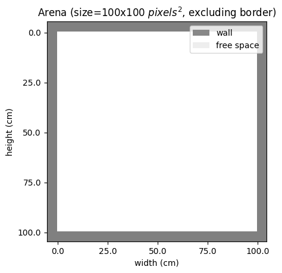

Getting Started
Quick Start Guide
Creating a Basic Environment
from rtgym import RatatouGym
gym = RatatouGym(
temporal_resolution=50,
spatial_resolution=1,
)
gym.init_arena_map(shape='rectangle', dimensions=[100, 100])
_ = gym.arena.vis()
This will create a basic rectangular arena with a resolution of 1cm per pixel with 50ms per time step. The size of the arena is 100cm x 100cm. Visualize the arena:
{kind=link}
Generating Your First Trial
Generate a navigation trial with your agent:
# Generate a trial with 1000 time steps
trial = gym.generate_trial(trial_length=1000)
# Get the agent's trajectory
trajectory = trial.get_trajectory()
# Print some basic information
print(f"Trial duration: {len(trajectory)} steps")
print(f"Starting position: {trajectory.x[0]:.2f}, {trajectory.y[0]:.2f}")
print(f"Ending position: {trajectory.x[-1]:.2f}, {trajectory.y[-1]:.2f}")
Accessing Neural Responses
RatatouGym provides biologically-inspired neural responses:
# Get spatial responses (place cells, grid cells, etc.)
spatial_responses = trial.get_spatial_responses()
# Get movement responses (head direction, velocity, etc.)
movement_responses = trial.get_movement_responses()
# Get all responses together
all_responses = trial.get_agent_responses()
print(f"Available spatial cell types: {list(spatial_responses.keys())}")
print(f"Available movement cell types: {list(movement_responses.keys())}")
Visualizing Results
Visualize your agent’s behavior and neural responses:
import matplotlib.pyplot as plt
# Plot the trajectory
plt.figure(figsize=(10, 5))
plt.subplot(1, 2, 1)
plt.plot(trajectory.x, trajectory.y, 'b-', alpha=0.7)
plt.plot(trajectory.x[0], trajectory.y[0], 'go', markersize=8, label='Start')
plt.plot(trajectory.x[-1], trajectory.y[-1], 'ro', markersize=8, label='End')
plt.title('Agent Trajectory')
plt.legend()
plt.axis('equal')
# Plot place cell responses
plt.subplot(1, 2, 2)
place_responses = spatial_responses['place_cell']
plt.imshow(place_responses.T, aspect='auto', cmap='hot')
plt.title('Place Cell Responses')
plt.xlabel('Time Steps')
plt.ylabel('Place Cells')
plt.tight_layout()
plt.show()
Common Use Cases
Training Machine Learning Models
RatatouGym is perfect for training spatial navigation models:
import torch
import torch.nn as nn
# Generate training data
trials = []
for i in range(100): # Generate 100 trials
trial = gym.generate_trial(trial_length=500)
trials.append(trial)
# Extract features for training
trajectories = [trial.get_trajectory() for trial in trials]
responses = [trial.get_agent_responses() for trial in trials]
# Your training code here...
Comparing Different Arena Shapes
Study how environment shape affects navigation:
from rtgym.arena.arena_shapes import Circle, Rectangle, Triangle
shapes = ['circle', 'rectangle', 'triangle']
results = {}
for shape in shapes:
arena = Arena(shape=shape, size=100)
agent = Agent(arena=arena)
gym = rtgym.RatatouGym(arena=arena, agent=agent)
trial = gym.generate_trial(trial_length=1000)
results[shape] = trial.get_trajectory()
# Compare navigation patterns across shapes
for shape, trajectory in results.items():
plt.plot(trajectory.x, trajectory.y, label=shape, alpha=0.7)
plt.legend()
plt.title('Navigation Patterns by Arena Shape')
plt.show()
Next Steps
Now that you have RatatouGym running, explore these topics:
Arena Customization: Learn about different arena shapes and how to create custom environments
Agent Behavior: Understand how to configure agent movement patterns and preferences
Sensory Systems: Dive deep into the neural response models
Advanced Examples: Check out complex scenarios and research applications
For detailed information on each component, see the examples section and the full API documentation.
Troubleshooting
Common Issues
- Installation Problems
If you encounter installation issues, try:
pip install --upgrade pip pip install -e .
- Import Errors
Make sure all dependencies are installed:
pip install numpy matplotlib torch scipy scikit-learn
- Performance Issues
For large-scale experiments, consider:
Reducing trial length or number of neurons
Using batch processing for multiple trials
Leveraging GPU acceleration if available
Getting Help
Check the examples for more detailed usage patterns
Review the API documentation for specific function details
Open an issue on GitHub for bugs or feature requests
Join our community discussions for research questions